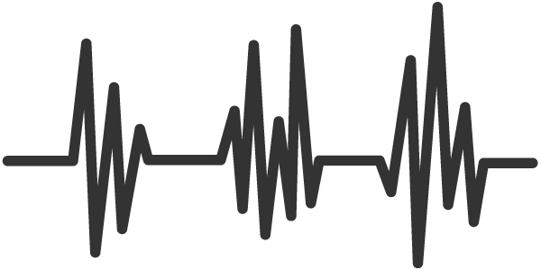

Miten HyteGym auttaa sinua hyvinvointisi seuraamisessa

Painoindeksilaskuri / BMI-laskuri
Painoindeksilaskurilla voit laskea pituuden ja painon perusteella painoindeksin (BMI, Body Mass Index).
Mittastuloksesi: 0
| Luokitus | BMI-arvo |
|---|---|
| Alipaino | 0 - 18.9 |
| Normaali paino | 19 - 24.9 |
| Ylipaino | 25.0 - 40.0 tai enemmän |
Tähän saat tietoa painoindeksistäsi


About
Tämä on meidän tarinamme
Olemme joukko nuoria yrittäjiä, jotka uskovat HRV-tiedon ja treeniohjelman voimaan hyvinvoinnin seuraamisessa.
Sykevaihtelua tai HRV:tä käytetään fysiologisiin mittauksiin kuten VO2-maksimaalinen hapenottokyky, SV-stressitesti, Suoritustaso, Anaerobinen kynnys ja Harjoituksen tehokkuus.
Ohjelmamme tukee kehitystäsi eri treeniohjelmien muodossa, tarjoaa päiväkirjan hyvinvointisi seurantaan sekä HRV-tietojesi analysointiin.